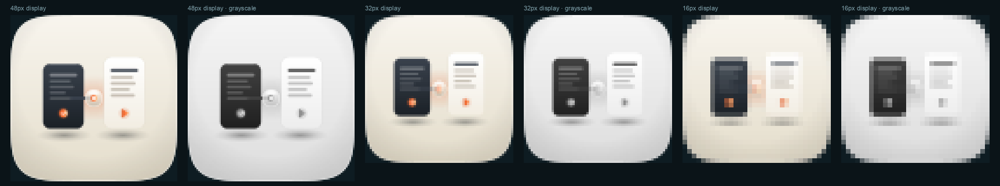

Direction “The Golden Thread” in the Tahoe gel-porcelain register · one take, not three · audited on real renders at 1024 / 128 / 64 / 48 / 32 / 16, scored against the 12-point rubric retrospectively on 2026-08-19. What the tile actually carries: a warm porcelain cushion holding two rounded cards — a graphite one on the left with four ruled lines and a vermilion check badge, a near-white one on the right with four ruled lines and a vermilion play triangle — joined near their upper edges by a small gel-glass coupler disc with a vermilion core and a warm bloom around it.
A · ships · 1024 source
The one take on this commission, with its renders, its 12-point rubric score and the verdict behind it
Take
Renders at 128 / 64 / 48 / 32 / 16 css px (2× retina sources), plus the 16px squint magnified
Rubric
Verdict
A · icon.svgthe only take: hand-authored layered SVG emitted by build_icon.py, three named groups — SHIPS, and is already the marketplace icon
1286448321616 ×6
8 / 12
Scored retrospectively on 2026-08-19, from these renders, on this date — not at commission time. The sheet this replaced carried no 12-point score, so there is no original verdict to preserve and nothing here is a restatement of one. Every number below was sampled off audit-renders/A-1024.png and the small renders in this row.
Mask discipline — pass. Built on the shared squircle-path.txt; the 1024 render's four corner pixels are fully transparent and no corner radius or drop shadow is baked outside the mask.
Grid adherence — pass. Content bounding box 621×438, 60.6% of the tile wide, inside the 55–65% band; margins L201 R202 T261 B325, so it is dead centred horizontally and lifted 32px above the geometric centre, which is the conventional optical lift.
Silhouette — pass, narrowly. Filled solid black it reads as two rounded cards with a small disc between them: nameable, but as “two documents” rather than as anything this skill owns.
16px squint — fail, and this is a non-negotiable. Read off the 32px source in this row: the right card holds 1.48:1 against the ground it sits on, so the pair collapses to one dark block beside a pale smear; the coupler disc measures 1.03:1 against the ground and is simply gone; the check badge and the play triangle each reduce to a single warm pixel. The concept's own signature is the splice, and the splice is the first thing to disappear.
Single light model — pass. One soft top-left key; both cards' contact shadows fall down and right and agree with each other; the coupler's warm bloom is the sanctioned emissive second source.
Palette economy — pass. Two families, warm porcelain and graphite, plus one vermilion ramp reserved for the coupler, the check badge and the play triangle.
Figure-ground — fail. The graphite card is strong at 5.65:1, and the rest of the composition is not: the right card 1.48:1 against the lower-right ground and 1.11:1 against the upper-left, the coupler core 1.03:1, the check badge 1.26:1, the play triangle 1.74:1, all against a 3:1 bar. Half the tile separates by hue and by its own drop shadow rather than by value, which the grayscale strip below shows directly.
Depth coherence — pass. Ground vignette under both cards, each seated on a soft contact shadow, coupler above both, no z-fighting.
Era coherence — pass. One register throughout, the same gel-porcelain ground five of its sibling plugins use.
Variant robustness — fail. It is real layered vector and editable, but its three named groups (pastSessionBlock, resumedActiveBlock, goldenThreadHandover) are object groups, not the bg/mid/fg/highlight depth planes a tint remaps. Identity is hostage to the ground colour and to the accent hue: in grayscale the right card merges into the ground at 32 and 16px and all three vermilion marks become mid-grey dots.
Personality — fail. The one nameable device beyond the cards is the coupler disc, and at 1.03:1 it is the least visible thing on the tile. Take it away and the mark is two document cards with a play button.
No-text — pass. No words and no screenshot; the ruled bars are placeholder rules, not glyph text.
8/12, with a non-negotiable among the failures. A reviewer could reasonably read #4 as a deduction rather than a fail, since the two-card pair does survive in colour at 16px; on that reading it is 9/12. Either way it is under the 10/12 delivery bar, and #7 and #10 fail on measurements rather than on taste.
Why this sheet has one row, and what the previous version claimed. Only one take exists. assets/ holds icon.svg and its exports and nothing else — no Arrow take, no Engine C raster, no losing variant, no fidelity run, no panel verdict. The sheet that stood here until 2026-08-19 showed three rows, “A · icon.svg”, “B · Flat Vector Take” and “C · Pure Raster Reference”, scored 14/14, 11/14 and 10/14 against a 14-point rubric that is not this marketplace's rubric. Rows B and C had no artifacts behind them: all three rows displayed take A's own shipped exports, at 1× rather than at retina sources, so the page compared the icon with itself and reported a set having been judged. Those two rows are gone rather than rewritten, because there is nothing to write about them. Three takes is the pipeline's floor, so audit_sheet.py check fails this directory on the take count, and that failure is accurate: the commission ran one engine.
Recommendation: ship A (icon.svg), which is what already happened — this sheet records that rather than ratifying it. It is the only take, it is the icon on skills.fledgeling.app and in the root README today, and nothing in this pass changed a pixel of it. What the sheet can now say honestly is what it costs. Known liabilities, in the order they would be fixed:(1) the right card is 1.48:1 against its ground and carries the resumed half of the concept, so the whole right side of the tile is separated by a drop shadow — the fix is a value step between card and ground, not a hue change. (2) The coupler disc, the one device that makes this icon about resuming rather than about documents, measures 1.03:1 and vanishes below 32px; it needs to be the highest-contrast object on the tile rather than the lowest. (3) The layer ids are objects rather than depth planes, so there is nothing for Dark, Clear or Tinted to remap — the 76% failure mode the rubric calls the highest-leverage fix. (4) Two takes are missing, and with them any evidence that this composition beat an alternative. What this sheet does not claim: no fidelity loop ran, no blind panel ran, and no engine other than a hand-authored SVG was tried — there is no run directory, no score.json and no judge verdict anywhere in this plugin. Whether the icon is re-commissioned against the bar or shipped as it stands is the owner's call, and both readings are available from the numbers above.
Grayscale, at the sizes where it matters

Each pair is the same render, magnified nearest-neighbour: colour on the left, grayscale on the right. It is the evidence behind #7 and #10 — in grayscale the right card loses its boundary against the ground and the three vermilion marks flatten to mid-grey, so what survives is a dark block and a pale field.
Measured, not eyeballed
Reading
Value
Bar / why it was taken
graphite card vs ground
5.65:1
#7 bar is 3:1 — the one object that clears it
right card vs ground (lower right)
1.48:1
fails #7; it carries half the concept
right card vs ground (upper left)
1.11:1
worst case, where the ground is lightest
coupler core vs ground
1.03:1
the signature device, at the value of its own ground
check badge / play triangle vs ground
1.26:1 / 1.74:1
both accents read by hue, not by value
content bounding box
621 × 438 px
60.6% of tile wide, inside the 55–65% band (#2)
safe-zone margins
L201 R202 T261 B325
centred horizontally, 32px optical lift (#2)
fidelity.py structure
PASS · 8 paths, 14,381 bytes, 3 named groups
well inside the 400-path / 200KB envelope
takes on disk
1
the pipeline floor is 3 (A + B + C)
Rubric: the 12-point icon audit from icon-directions.md (mask discipline, grid adherence, silhouette, 16px squint, single light model, palette economy, figure-ground, depth coherence, era coherence, variant robustness, personality, no-text) — checks 1–4 non-negotiable, delivery bar ≥10/12. Renders produced by python3 audit_sheet.py render <dir> at 1024 / 256 / 128 / 96 / 64 / 32 sources through rsvg-convert, displayed at 128 / 64 / 48 / 32 / 16 css px, and verified by its check subcommand; audit-renders/render-manifest.json records the take's source and kind. Contrast figures are WCAG relative-luminance ratios between 24×24px mean patches sampled on the 1024 render. The icon itself, its exports and build_icon.py were not touched in this pass — only this page, and the renders it displays, which did not exist before it.